##R Introduction
Topics
- Objects
- Assignment
- Functions
- Finding help
- Importing packages
- Basic data manipulation
- Operations within groups of data
- Saving data
Setup
Software and Materials
Follow the R Installation instructions and ensure that you can successfully start Positron.
A handy base R cheat-sheet is available to help you look up and remember basic syntax. In addition, a data transformation cheat-sheet provides a convenient summary of data manipulation syntax.
Class Structure
Informal - Ask questions at any time. Really!
Collaboration is encouraged - please spend a minute introducing yourself to your neighbors!
Prerequisites
This is an introductory R course:
- Assumes no prior knowledge of how to use R
- We do assume you know why you want to learn R. If you don’t, and want a comparison of R to other statistical software, see our Data Science Tools workshop
- Relatively slow-paced
Goals
We will learn about the R language by analyzing a dataset of baby names. In particular, our goals are to learn about:
- What R is and how it works
- How we can interact with R
- Foundations of the language (objects, assignment, functions)
- The
tidyversepackage ecosystem for data science - Basic data manipulation useful for cleaning datasets
- Working with grouped data
- Aggregating data to create summaries
- Saving objects, data, and scripts
This workshop will not cover how to iterate over collections of data, create your own functions, produce publication quality graphics, or fit models to data. These topics are covered in our R Data Wrangling, R Graphics, and R Regression Models workshops.
R basics
GOAL: To learn about the foundations of the R language. In particular:
- What R is and how it works
- R interfaces
- Objects
- Assignment
- Functions
- Getting help
tidyversepackage ecosystem for data science
What is R?
- R is a free language and environment for statistical computing and graphics
- R is an interpreted language, not a compiled one, meaning that all commands typed on the keyboard are directly executed without requiring to build a complete program (this is like Python and unlike C, Fortran, Pascal, etc.)
- R has existed for over 25 years
- R is modular — most functionality is from add-on packages. So the language can be thought of as a platform for creating and running a large number of useful packages.
Why use R?
- The most popular software for data analysis
- Extremely flexible: can be used to manipulate, analyze, and visualize any kind of data
- Cutting edge statistical tools
- Publication quality graphics
- 16,000+ add on packages covering all aspects of statistics and machine learning
- Active community of users
How does R work?
While graphical-based statistical software (e.g., SPSS, GraphPad) immediately display the results of an analysis, R stores results in an object (a data structure), so that an analysis can be done with no result displayed. Such a feature is very useful, since a user can extract only that part of the results that is of interest and can pass results into further analyses.
For example, if you run a series of 20 regressions and want to compare the different regression coefficients, R can display only the estimated coefficients: thus the results may take a single line, whereas graphical-based software could open 20 results windows. In addition, these regression coefficients can be passed directly into further analyses — such as generating predictions.
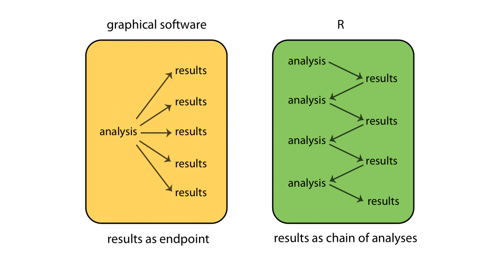
When R is running, variables, data, functions, results, etc., are stored in memory on the computer in the form of objects that have a name. The user can perform actions on these objects with operators (arithmetic, logical, comparison, etc.) and functions (which are themselves objects). Here’s a schematic of how this all fits together:
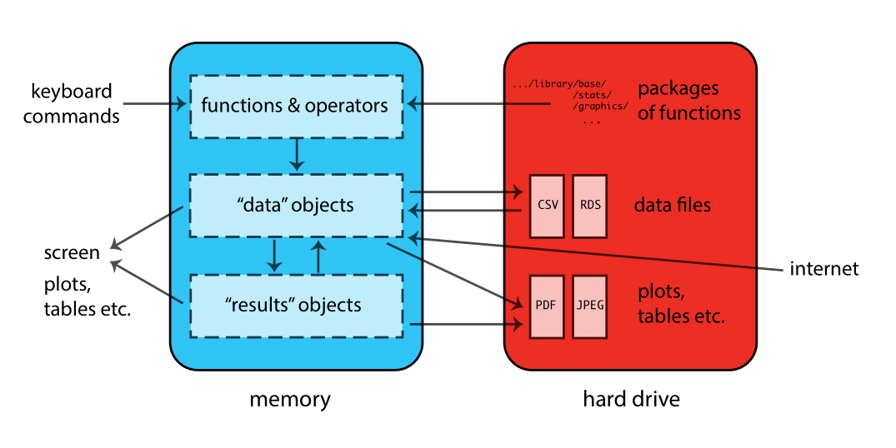
Interfaces
Text editors, IDEs, & Notebooks
There are different ways of interacting with R. The two main ways are through:
text editors or Integrated Development Environments (IDEs): Text editors and IDEs are not really separate categories; as you add features to a text editor it becomes more like an IDE. Some editors/IDEs are language-specific while others are general purpose — typically providing language support via plugins. For these workshops we will use RStudio; it is a good R-specific IDE with many useful features. Here are a few popular editors/IDEs that can be used with R:
Editor / IDE Features Ease of use Language support RStudio Excellent Easy R, Python, Quarto Positron Excellent Easy R, Python JupyterLab Good Easy Excellent VS Code Excellent Moderate Very good Vim Excellent Hard Good Emacs Excellent Hard Excellent Notebooks: Web-based applications that allow you to create and share documents that contain live code, equations, visualizations, and narrative text. A popular notebook is the open source Jupyter Notebook that has support for 40+ languages.
Source code & literate programming
There are also several different formats available for writing code in R. These basically boil down to a choice between:
Source code: the practice of writing code, and possibly comments, in a plain text document. In R this is done by writing code in a text file with a
.Ror.rextension. Writing source code has the great advantage of being simple. Source code is the format of choice if you intend to run your code as a complete script - for example, from the command line.Literate programming: the practice of embedding computer code in a natural language document. In R this is often done using Rmarkdown, which involves embedding R code in a document that is authored using Markdown and which has a
.Rmdextension. Markdown is easy to write and designed to be human-readable. Markdown is the format of choice if you intend to run your code interactively, by running small pieces of code and looking at each output. Many researchers use Markdown to write their journal papers, dissertations, and statistics/math class notes, since it is easy to convert into other formats later, such as HTML (for a webpage), MS Word, or PDF (via LaTeX).
Here are some resources for learning more about Positron, RStudio, and R Markdown:
Launch a session
Start Positron and open the workshop materials folder:
- On Mac, Positron will be in your Applications folder. On Windows, click the start button and search for Positron.
- In Positron go to
File -> Open Folderand choose the workshop materials folder on your desktop. Positron makes it the working directory, which is where the data files are, and lists its files in the Explorer on the left. - In the Explorer, click the file with the word “BLANK” in the name to open it.
Exercise 0
The purpose of this exercise is to give you an opportunity to explore the interface provided by Positron. You may not know how to do these things; that’s fine! This is an opportunity to figure it out.
Also keep in mind that we are living in a golden age of tab completion. If you don’t know the name of an R function, try guessing the first two or three letters and pressing TAB. If you guessed correctly the function you are looking for should appear in a pop up!
- Try to get R to add 2 plus 2.
- Try to calculate the square root of 10.
##- R includes extensive documentation, including a manual named “An introduction to R”. Use Positron’s Help pane to locate this manual.
TipExercise 0 solution
- Try to get R to add 2 plus 2.
2 + 2[1] 4# or
sum(2, 2)[1] 4- Try to calculate the square root of 10.
sqrt(10)[1] 3.162278# or
10^(1/2)[1] 3.162278- R includes extensive documentation, including a manual named “An introduction to R”. Use Positron’s Help pane to locate this manual.
# Go to the main help page by running 'help.start() or using the GUI
# menu, find and click on the link to "An Introduction to R".Syntax rules
- R is case sensitive
- R ignores white space
- Variable names should start with a letter (A-Z and a-z) and can include letters, digits (0-9), dots (.), and underscores (_)
- Comments can be inserted using a hash
#symbol - Functions must be written with parentheses, even if there is nothing within them; for example:
ls()
Function calls
Functions perform actions — they take some input, called arguments and return some output (i.e., a result). Here’s a schematic of how a function works:
The general form for calling R functions is
# FunctionName(arg.1 = value.1, arg.2 = value.2, ..., arg.n = value.n)The arguments in a function can be objects (data, formulae, expressions, etc.), some of which could be defined by default in the function; these default values may be modified by the user by specifying options.
Arguments can be matched by name; unnamed arguments will be matched by position.
round(x = 2.34, digits = 1) # match by name[1] 2.3round(2.34, 1) # match by position[1] 2.3round(1, 2.34) # be careful when matching by position![1] 1round(digits = 1, x = 2.34) # matching by name is safer![1] 2.3Assignment
Objects (data structures) can be assigned names and used in subsequent operations:
- The gets
<-operator (less than followed by a dash) is used to save objects - The name on the left gets the object on the right
sqrt(10) # calculate square root of 10; result is not stored anywhere[1] 3.162278x <- sqrt(10) # assign result to a variable named xAs mentioned in Syntax rules above, names should start with a letter, and contain only letters, numbers, underscores, and periods.
Asking for help
- You can ask R for help using the
helpfunction, or the?shortcut.
help(help)
?help
?sqrtThe `help` function can be used to look up the documentation for a function, or to look up the documentation to a package. We can learn how to use the `stats` package by reading its documentation like this:help(package = "stats")If you know the name of the package you want to use, then Googling “R package-name” will often get you to the documentation. Packages are hosted on several different repositories, including:
If you know the type of analysis you want to perform, you can Google “CRAN Task Views”, where there are curated lists of packages https://cran.r-project.org/web/views/. If you want to know which packages are popular, you can look at https://r-pkg.org.
Reading data
R has data reading functionality built-in – see e.g., help(read.table). However, faster and more robust tools are available, and so to make things easier on ourselves we will use a contributed package instead. This requires that we learn a little bit about packages in R.
Installing & using packages
R is a modular environment that is extended by the use of packages. Packages are collections of functions or commands that are designed to perform specific tasks (e.g., fit a type of regression model). A large number of contributed packages are available (> 16,000).
Using an R package is a two step process:
Install the package onto your computer using the
install.packages()function. This only needs to be done the first time you use the package.Load the package into your R session’s search path using the
library()function. This needs to be done each time you use the package.
The tidyverse
While R’s built-in packages are powerful, in recent years there has been a big surge in well-designed contributed packages for R. In particular, a collection of R packages called tidyverse have been designed specifically for data science. All packages included in tidyverse share an underlying design philosophy, grammar, and data structures. This philosophy is rooted in the idea of “tidy data”:
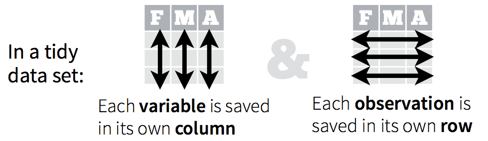
A typical workflow for using tidyverse packages looks like this:
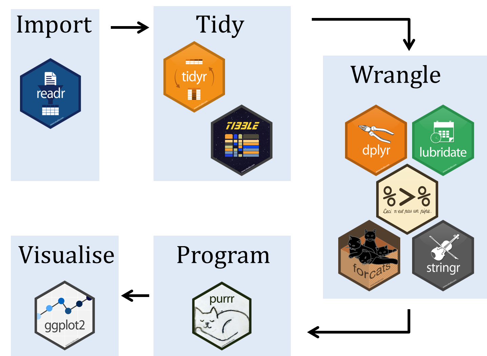
You should have already installed the tidyverse and rmarkdown packages onto your computer before the workshop — see R Installation. Now let’s load these packages into the search path of our R session.
# Load packages tidyverse and rmarkdown using library() function
library(tidyverse)
library(rmarkdown)Readers for common file types
To read data from a file, you have to know what kind of file it is. The table below lists functions from the readr package, which is part of tidyverse, that can import data from common plain-text formats.
| Data Type | Function |
|---|---|
| comma separated | read_csv() |
| tab separated | read_delim() |
| other delimited formats | read_table() |
| fixed width | read_fwf() |
Note You may notice that there exist similar functions in one of the built-in packages in R called utils, e.g., read.csv and read.delim. These are legacy functions that tend to be slower and less robust than the readr functions. One way to tell them apart is that the faster more robust versions use underscores in their names (e.g., read_csv) while the older functions use dots (e.g., read.csv). Our advice is to use the more robust newer versions, i.e., the ones with underscores.
Baby names data
As an example project we will analyze the popularity of baby names in the US from 1960 through 2017. The data were retrieved from https://www.ssa.gov/oact/babynames/limits.html.
Here are the questions we will use R to answer:
- In which year did your name (or another name) occur most frequently by count?
- Which names have the highest popularity by proportion for each sex and year?
- How does the percentage of babies given one of the top 10 names of the year change over time?
Exercise 1
Reading the baby names data
Make sure you have installed the tidyverse suite of packages and attached them with library(tidyverse).
- Open the
read_csv()help page to determine how to use it to read in data.
##- Read the baby names data using the
read_csv()function and assign the result with the namebaby_names.
##- BONUS (optional): Save the
baby_namesdata as an R data setbabynames.rds.
##
TipExercise 1 solution
- Open the
read_csv()help page to determine how to use it to read in data.
?read_csv- Read the baby names data using the
read_csv()function and assign the result with the namebaby_names.
baby_names <- read_csv("babyNames.csv")- BONUS (optional): Save the
baby_namesdata as an R data setbabynames.rds.
write_rds(baby_names, file = “babynames.rds”)Manipulating data
GOAL: To learn about basic data manipulation used to clean datasets. In particular:
- Filtering data by choosing rows — using the
filter()function - Selecting data by choosing columns — using the
select()function - Arranging data by reordering rows — using the
arrange()function - Using the pipe
%>%operator to simplify sequential operations
In this section we will pull out specific names from the baby names data and examine changes in their popularity over time.
The baby_names object we created in the last exercise is a data.frame. There are many other data structures in R, but for now we’ll focus on working with data.frames. Think of a data.frame as a spreadsheet. If you want to know more about R data structures, you can see a summary in our R Data Wrangling workshop.
R has decent data manipulation tools built-in – see e.g., help(Extract). But, tidyverse packages often provide more intuitive syntax for accomplishing the same task. In particular, we will use the dplyr package from tidyverse to filter, select, and arrange data, as well as create new variables.
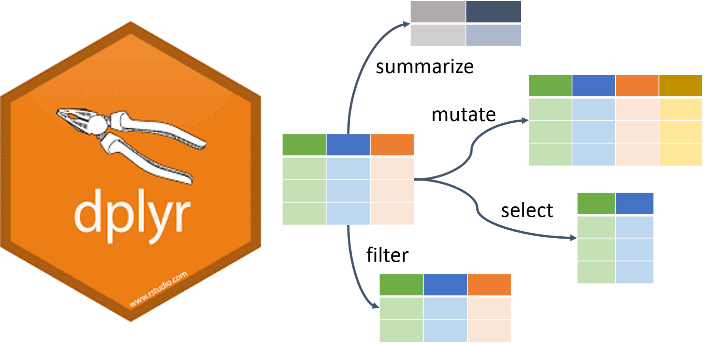
Filter, select, & arrange
One way to find the year in which your name was the most popular is to filter out just the rows corresponding to your name, and then arrange (sort) by Count.
To demonstrate these techniques we’ll try to determine whether “Alex”” or “Mark” was more popular in 1992. We start by filtering the data so that we keep only rows where Year is equal to 1992 and Name is either “Alex” or “Mark”.
# Read in the baby names data if you haven't already
baby_names <- read_csv("babyNames.csv")# Filter data, keeping "Alex" and "Mark" in year 1992, and
# assign to a new object "baby_names_alexmark"
# Use logical operators to specify the filtering condition
baby_names_alexmark <- filter(baby_names,
Year == 1992 & (Name == "Alex" | Name == "Mark"))
print(baby_names_alexmark) # explicit printing# A tibble: 4 × 4
Name Sex Count Year
<chr> <chr> <dbl> <dbl>
1 Alex Girls 366 1992
2 Mark Girls 20 1992
3 Mark Boys 8743 1992
4 Alex Boys 7348 1992baby_names_alexmark # implicit printing# A tibble: 4 × 4
Name Sex Count Year
<chr> <chr> <dbl> <dbl>
1 Alex Girls 366 1992
2 Mark Girls 20 1992
3 Mark Boys 8743 1992
4 Alex Boys 7348 1992Notice that we can combine conditions using & (AND) and | (OR).
In this case it’s pretty easy to see that “Mark” is more popular, but to make it even easier we can arrange the data so that the most popular name is listed first.
# Arrange the data by Count to see the most popular name first
arrange(baby_names_alexmark, Count)# A tibble: 4 × 4
Name Sex Count Year
<chr> <chr> <dbl> <dbl>
1 Mark Girls 20 1992
2 Alex Girls 366 1992
3 Alex Boys 7348 1992
4 Mark Boys 8743 1992# Arrange the data in descending order instead
arrange(baby_names_alexmark, desc(Count))# A tibble: 4 × 4
Name Sex Count Year
<chr> <chr> <dbl> <dbl>
1 Mark Boys 8743 1992
2 Alex Boys 7348 1992
3 Alex Girls 366 1992
4 Mark Girls 20 1992We can also use the select() function to subset the data.frame by columns. We can then assign the output to a new object. If we would just like to glance at the first few lines we can use the head() function:
# Select columns Name and Count and assign to a new object "baby_names_subset"
baby_names_subset <- select(baby_names, Name, Count)
# Use head() to glance at the first few lines
head(baby_names_subset)# A tibble: 6 × 2
Name Count
<chr> <dbl>
1 Mary 51474
2 Susan 39200
3 Linda 37314
4 Karen 36376
5 Donna 34133
6 Lisa 33702head(baby_names_subset, n = 6) # default is n = 6# A tibble: 6 × 2
Name Count
<chr> <dbl>
1 Mary 51474
2 Susan 39200
3 Linda 37314
4 Karen 36376
5 Donna 34133
6 Lisa 33702Logical & relational operators
In a previous example we used == to filter rows. Here’s a table of other commonly used relational operators:
| Operator | Meaning |
|---|---|
== |
equal to |
!= |
not equal to |
> |
greater than |
>= |
greater than or equal to |
< |
less than |
<= |
less than or equal to |
%in% |
contained in |
These relational operators may be combined with logical operators, such as & (and) or | (or). For example, we can create a vector (a container for a collection of values) and demonstrate some ways to combine operators:
# Create a vector of consecutive values between 1 and 10
x <- 1:10 # a vector
x [1] 1 2 3 4 5 6 7 8 9 10# Which elements of x are above 7
x > 7 # a simple condition [1] FALSE FALSE FALSE FALSE FALSE FALSE FALSE TRUE TRUE TRUE# Which elements of x are above 7 or below 3
x > 7 | x < 3 # two conditions combined [1] TRUE TRUE FALSE FALSE FALSE FALSE FALSE TRUE TRUE TRUEIf we want to match multiple elements from two vectors we can use the %in% operator:
# x %in% vector
# elements of x matching numbers 1, 5, or 10
x %in% c(1, 5, 10) [1] TRUE FALSE FALSE FALSE TRUE FALSE FALSE FALSE FALSE TRUENotice that logical and relational operators return logical vectors of TRUE and FALSE values. The logical vectors returned by these operators can themselves be operated on by functions:
# Count the number of elements of x above 7
x > 7 [1] FALSE FALSE FALSE FALSE FALSE FALSE FALSE TRUE TRUE TRUEsum(x > 7)[1] 3Exercise 2.1
Peak popularity of your name
In this exercise you will discover the year your name reached its maximum popularity.
Read in the “babyNames.csv” file if you have not already done so, assigning the result to baby_names. Make sure you have installed the tidyverse suite of packages and attached them with library(tidyverse).
- Use
filterto extract data for your name (or another name of your choice).
##- Arrange the data you produced in step 1 above by
Count. In which year was the name most popular?
##- BONUS (optional): Filter the data to extract only the row containing the most popular boys name in 1999.
##
TipExercise 2.1 solution
- Use
filterto extract data for your name (or another name of your choice).
baby_names_george <- filter(baby_names, Name == "George")- Arrange the data you produced in step 1 above by
Count. In which year was the name most popular?
arrange(baby_names_george, desc(Count))# A tibble: 97 × 4
Name Sex Count Year
<chr> <chr> <dbl> <dbl>
1 George Boys 14063 1960
2 George Boys 13638 1961
3 George Boys 12553 1962
4 George Boys 12084 1963
5 George Boys 11793 1964
6 George Boys 10683 1965
7 George Boys 9942 1966
8 George Boys 9702 1967
9 George Boys 9388 1968
10 George Boys 9203 1969
# ℹ 87 more rows- BONUS (optional): Filter the data to extract only the row containing the most popular boys name in 1999.
baby_names_boys_1999 <- filter(baby_names,
Year == 1999 & Sex == "Boys")filter(baby_names_boys_1999, Count == max(Count))# A tibble: 1 × 4
Name Sex Count Year
<chr> <chr> <dbl> <dbl>
1 Jacob Boys 35361 1999Pipe operator
There is one very special operator in R called a pipe operator that looks like this: %>%. It allows us to “chain” several function calls and, as each function returns an object, feed it into the next call in a single statement, without needing extra variables to store the intermediate results. The point of the pipe is to help you write code in a way that is easier to read and understand as we will see below. The keyboard shortcut for the pipe is ctrl + shift + M.
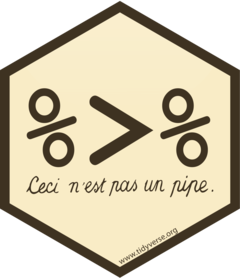
There is no need to load any additional packages as the operator is made available via the magrittr package installed as part of tidyverse. Let’s rewrite the sequence of commands to output ordered counts for names “Alex” or “Mark”.
# Filter data, keeping "Alex" and "Mark" in year 1992, and
# assign to a new object "baby_names_alexmark"
# Arrange the result in a descending order by Count
# unpiped version
baby_names_alexmark <- filter(baby_names, Year == 1992 & (Name == "Alex" | Name == "Mark"))
arrange(baby_names_alexmark, desc(Count))# A tibble: 4 × 4
Name Sex Count Year
<chr> <chr> <dbl> <dbl>
1 Mark Boys 8743 1992
2 Alex Boys 7348 1992
3 Alex Girls 366 1992
4 Mark Girls 20 1992# piped version
baby_names %>%
filter(Year == 1992 & (Name == "Alex" | Name == "Mark")) %>%
arrange(desc(Count))# A tibble: 4 × 4
Name Sex Count Year
<chr> <chr> <dbl> <dbl>
1 Mark Boys 8743 1992
2 Alex Boys 7348 1992
3 Alex Girls 366 1992
4 Mark Girls 20 1992Hint: try pronouncing “then” whenever you see %>%. Using pseudocode, we can see what the pipe is doing:
# unpiped version
filter(dataset, condition)
# piped version
dataset %>% filter(condition)
# what the pipe is doing
output_of_thing_on_left %>% becomes_input_of_thing_on_rightAdvantages of using the pipe:
- We can avoid creating intermediate variables, such as
baby_names_alexmark - Less to type
- Easier to read and follow the logic (especially avoiding using nested functions)
Exercise 2.2
Rewrite the solution to Exercise 2.1 using pipes. Remember that we were looking for the year your name reached its maximum popularity. For that, we filtered the data and then arranged by Count.
# Use filter to extract data for your name (or another name of your choice)
# Arrange the data by Count
TipExercise 2.2 solution
Rewrite the solution to Exercise 2.1 using pipes.
# Use filter to extract data for your name (or another name of your choice)
# Arrange the data by Count
baby_names %>%
filter(Name == "George") %>%
arrange(desc(Count))# A tibble: 97 × 4
Name Sex Count Year
<chr> <chr> <dbl> <dbl>
1 George Boys 14063 1960
2 George Boys 13638 1961
3 George Boys 12553 1962
4 George Boys 12084 1963
5 George Boys 11793 1964
6 George Boys 10683 1965
7 George Boys 9942 1966
8 George Boys 9702 1967
9 George Boys 9388 1968
10 George Boys 9203 1969
# ℹ 87 more rowsPlotting data
GOAL: Plot baby name trends over time – using the qplot() function
It can be difficult to spot trends when looking at summary tables. Plotting the data makes it easier to identify interesting patterns.
R has decent plotting tools built-in – see e.g., help(plot). However, again, we will make use of a contributed package from tidyverse called ggplot2.
For quick and simple plots we can use the qplot() function from ggplot2. For example, we can plot the number of babies given the name “Diana” over time like this:
# Filter data keeping rows for name "Diana" and
# assign to a new object called "baby_names_diana"
baby_names_diana <- filter(baby_names, Name == "Diana")# Use qplot() function to plot Counts (y) by Year (x)
qplot(x = Year, y = Count,
data = baby_names_diana)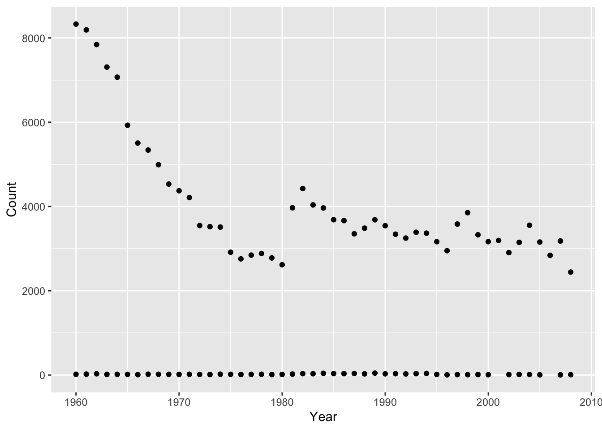
Interestingly, there are usually some gender-atypical names, even for very strongly gendered names like “Diana”. Splitting these trends out by Sex is very easy:
# Use qplot() function to plot Counts (y) by Year (x).
# Split trends by Sex using color.
qplot(x = Year, y = Count, color = Sex,
data = baby_names_diana)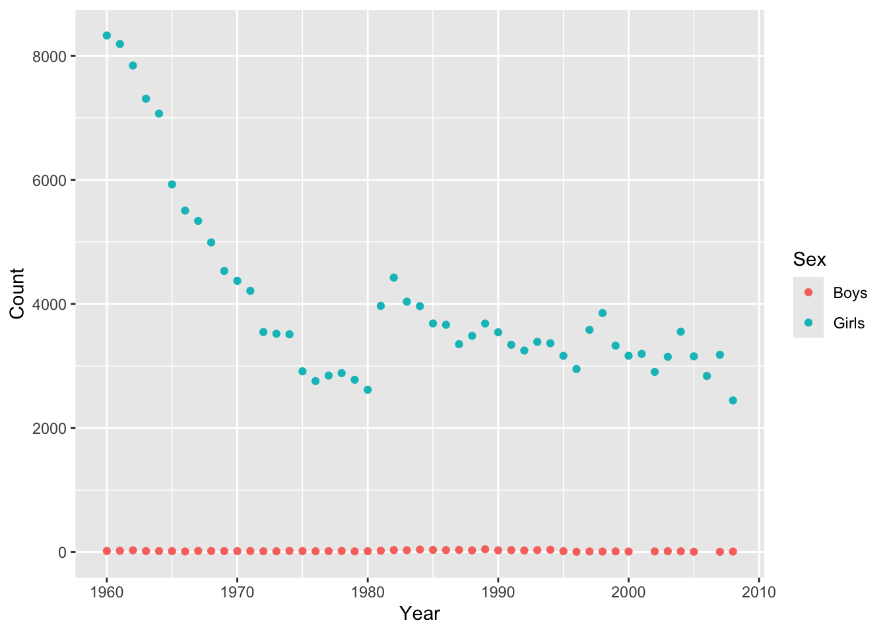
Exercise 3
Plot peak popularity of your name
- Use
filterto extract data for your name (same as previous exercise)
##- Plot the data you produced in step 1 above, with
Yearon the x-axis andCounton the y-axis.
##- Adjust the plot so that is shows boys and girls in different colors.
##- BONUS (Optional): Adjust the plot to use lines instead of points.
##
TipExercise 3 solution
- Use
filter()to extract data for your name (same as previous exercise).
baby_names_george <- filter(baby_names, Name == "George")- Plot the data you produced in step 1 above, with
Yearon the x-axis andCounton the y-axis.
qplot(x = Year, y = Count, data = baby_names_george)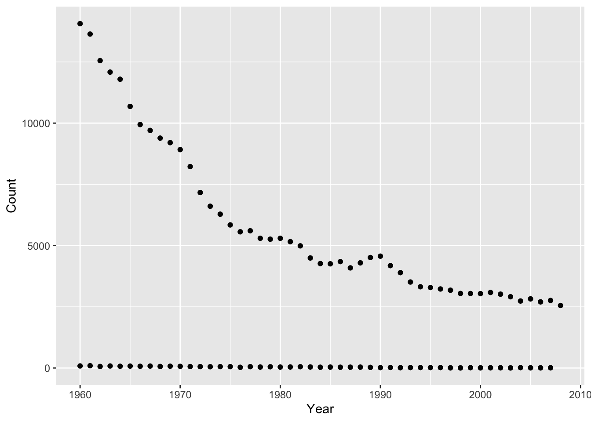
- Adjust the plot so that is shows boys and girls in different colors.
qplot(x = Year, y = Count, color = Sex, data = baby_names_george)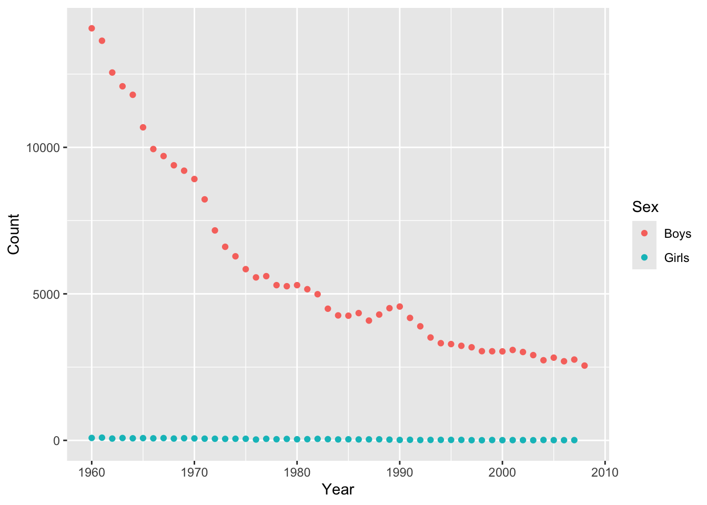
- BONUS (Optional): Adjust the plot to use lines instead of points.
qplot(x = Year, y = Count, color = Sex, data = baby_names_george, geom = "line")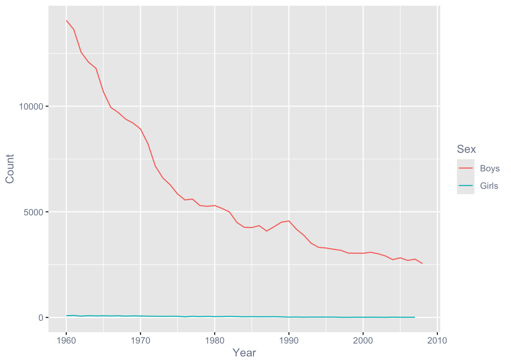
Creating variables
GOAL: To learn how to create new variables with and without grouped data. In particular:
- Creating new variables (columns) — using the
mutate()function - Creating new variables within groups — by combining the
mutate()andgroup_by()functions - Recode existing variables — by combining the
mutate()andcase_when()functions
We want to use these skills to find out which names have been the most popular.
Create or modify columns
So far we’ve used Count as a measure of popularity. A better approach is to use proportion to avoid confounding popularity with the number of babies born in a given year.
The mutate() function makes it easy to add or modify the columns of a data.frame. For example, we can use it to rescale the count of each name in each year:
# Use piping to add a new column to the data, called Count_1k,
# which rescales counts to thousands
baby_names <- baby_names %>% mutate(Count_1k = Count/1000)
head(baby_names) # A tibble: 6 × 5
Name Sex Count Year Count_1k
<chr> <chr> <dbl> <dbl> <dbl>
1 Mary Girls 51474 1960 51.5
2 Susan Girls 39200 1960 39.2
3 Linda Girls 37314 1960 37.3
4 Karen Girls 36376 1960 36.4
5 Donna Girls 34133 1960 34.1
6 Lisa Girls 33702 1960 33.7Operating by group
Because of the nested nature of our data, we want to compute proportion or rank within each Sex by Year group. The dplyr package has a group_by() function that makes this relatively straightforward. Here’s the logic behind this process:
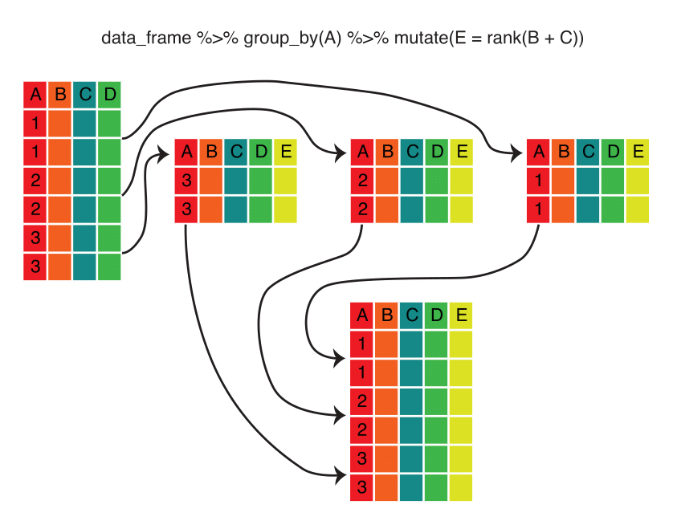
Note that the group_by() function converts a data frame into a grouped data frame — that is, a data frame with metadata identifying the groups. The data remain grouped until you change the groups by running group_by() again or remove the grouping metadata using ungroup().
Here’s the code that implements the calculation:
# Group baby_names by Year and Sex and rank Count_1k in descending order,
# within each group (calling the resulting new column "Rank").
# Remember to ungroup at the end!
baby_names <-
baby_names %>%
group_by(Year, Sex) %>%
mutate(Rank = rank(desc(Count_1k))) %>%
ungroup()
head(baby_names)# A tibble: 6 × 6
Name Sex Count Year Count_1k Rank
<chr> <chr> <dbl> <dbl> <dbl> <dbl>
1 Mary Girls 51474 1960 51.5 1
2 Susan Girls 39200 1960 39.2 2
3 Linda Girls 37314 1960 37.3 3
4 Karen Girls 36376 1960 36.4 4
5 Donna Girls 34133 1960 34.1 5
6 Lisa Girls 33702 1960 33.7 6Recoding variables
It’s often necessary to create a new variable that is a recoded version of an existing variable. For example, we might want to take our Count_1k variable and create a new variable that divides it into low, medium, and high categories. To do this, we can use the case_when() function within the mutate() function:
# Use case_when() to recode the newly created Rank column into:
# low (<=10), high (>40), and medium (all others).
# Call the resulting column "Count_levels".
baby_names <-
baby_names %>%
mutate(Count_levels = case_when(
Count_1k <= 10 ~ "low",
Count_1k > 10 & Count_1k <= 40 ~ "medium",
Count_1k > 40 ~ "high"
))
head(baby_names) # A tibble: 6 × 7
Name Sex Count Year Count_1k Rank Count_levels
<chr> <chr> <dbl> <dbl> <dbl> <dbl> <chr>
1 Mary Girls 51474 1960 51.5 1 high
2 Susan Girls 39200 1960 39.2 2 medium
3 Linda Girls 37314 1960 37.3 3 medium
4 Karen Girls 36376 1960 36.4 4 medium
5 Donna Girls 34133 1960 34.1 5 medium
6 Lisa Girls 33702 1960 33.7 6 medium Exercise 4
Most popular names
In this exercise your goal is to identify the most popular names for each year.
- Use
mutate()andgroup_by()to create a column namedProportionwhereProportion = Count/sum(Count)for eachYear X Sexgroup. Use pipes wherever it makes sense.
##- Use
mutate()andgroup_by()to create a column namedRankwhereRank = rank(desc(Count))for eachYear X Sexgroup.
##- Filter the baby names data to display only the most popular name for each
Year X Sexgroup. Keep only the columns:Year,Name,Sex, andProportion.
##- Plot the data produced in step 3, putting
Yearon the x-axis andProportionon the y-axis. How has the proportion of babies given the most popular name changed over time?
##- BONUS (optional): Which names are the most popular for both boys and girls?
##
TipExercise 4 solution
- Use
mutate()andgroup_by()to create a column namedProportionwhereProportion = Count/sum(Count)for eachYear X Sexgroup.
baby_names <-
baby_names %>%
group_by(Year, Sex) %>%
mutate(Proportion = Count/sum(Count)) %>%
ungroup()
head(baby_names) # A tibble: 6 × 8
Name Sex Count Year Count_1k Rank Count_levels Proportion
<chr> <chr> <dbl> <dbl> <dbl> <dbl> <chr> <dbl>
1 Mary Girls 51474 1960 51.5 1 high 0.0255
2 Susan Girls 39200 1960 39.2 2 medium 0.0194
3 Linda Girls 37314 1960 37.3 3 medium 0.0185
4 Karen Girls 36376 1960 36.4 4 medium 0.0180
5 Donna Girls 34133 1960 34.1 5 medium 0.0169
6 Lisa Girls 33702 1960 33.7 6 medium 0.0167- Use
mutate()andgroup_by()to create a column namedRankwhereRank = rank(desc(Count))for eachYear X Sexgroup.
baby_names <-
baby_names %>%
group_by(Year, Sex) %>%
mutate(Rank = rank(desc(Count))) %>%
ungroup()
head(baby_names)# A tibble: 6 × 8
Name Sex Count Year Count_1k Rank Count_levels Proportion
<chr> <chr> <dbl> <dbl> <dbl> <dbl> <chr> <dbl>
1 Mary Girls 51474 1960 51.5 1 high 0.0255
2 Susan Girls 39200 1960 39.2 2 medium 0.0194
3 Linda Girls 37314 1960 37.3 3 medium 0.0185
4 Karen Girls 36376 1960 36.4 4 medium 0.0180
5 Donna Girls 34133 1960 34.1 5 medium 0.0169
6 Lisa Girls 33702 1960 33.7 6 medium 0.0167- Filter the baby names data to display only the most popular name for each
Year X Sexgroup.
top1 <-
baby_names %>%
filter(Rank == 1) %>%
select(Year, Name, Sex, Proportion)
head(top1)# A tibble: 6 × 4
Year Name Sex Proportion
<dbl> <chr> <chr> <dbl>
1 1960 Mary Girls 0.0255
2 1960 David Boys 0.0403
3 1961 Mary Girls 0.0236
4 1961 Michael Boys 0.0409
5 1962 Lisa Girls 0.0234
6 1962 Michael Boys 0.0411- Plot the data produced in step 3, putting
Yearon the x-axis andProportionon the y-axis. How has the proportion of babies given the most popular name changed over time?
qplot(x = Year,
y = Proportion,
color = Sex,
data = top1,
geom = "line")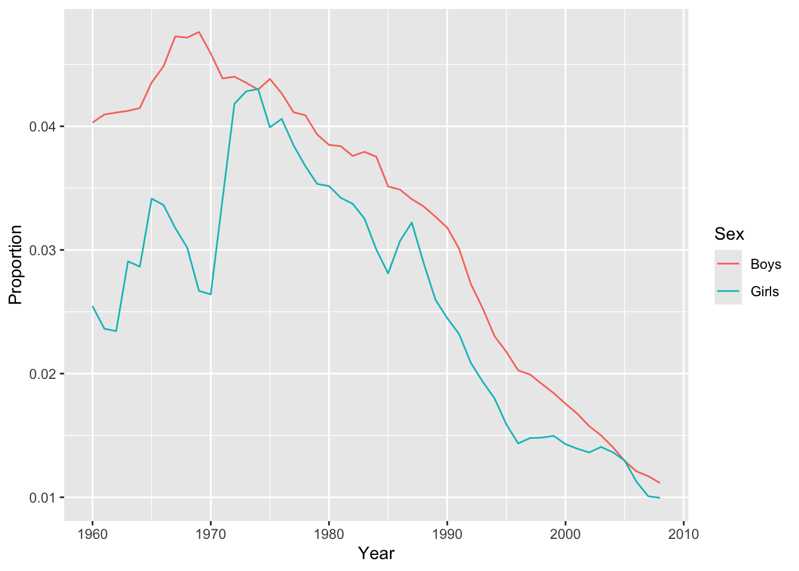
- BONUS (optional): Which names are the most popular for both boys and girls?
girls_and_boys <- inner_join(filter(baby_names, Sex == "Boys"),
filter(baby_names, Sex == "Girls"),
by = c("Year", "Name"))
girls_and_boys <- mutate(girls_and_boys,
Product = Count.x * Count.y,
Rank = rank(desc(Product)))
filter(girls_and_boys, Rank == 1)# A tibble: 1 × 16
Name Sex.x Count.x Year Count_1k.x Rank.x Count_levels.x Proportion.x Sex.y
<chr> <chr> <dbl> <dbl> <dbl> <dbl> <chr> <dbl> <chr>
1 Taylor Boys 7688 1993 7.69 51 low 0.00392 Girls
# ℹ 7 more variables: Count.y <dbl>, Count_1k.y <dbl>, Rank.y <dbl>,
# Count_levels.y <chr>, Proportion.y <dbl>, Product <dbl>, Rank <dbl>Aggregating variables
GOAL: To learn how to aggregate data to create summaries with and without grouped data. In particular:
- Collapsing data into summaries — using the
summarize()function - Creating summaries within groups — by combining the
summarize()andgroup_by()functions
You may have noticed that the percentage of babies given the most popular name of the year appears to have decreased over time. We can compute a more robust measure of the popularity of the most popular names by calculating the number of babies given one of the top 10 girl or boy names of the year.
To compute this measure we need to operate within groups, as we did using mutate() above, but this time we need to collapse each group into a single summary statistic. We can achieve this using the summarize() function.
First, let’s see how this function works without grouping. The following code outputs the total number of girl’s and boy’s names in the data:
# Use summarize() to output the total number of boy's and girl's names in the sample
baby_names %>%
summarize(Girls_n = sum(Sex=="Girls"),
Boys_n = sum(Sex=="Boys"))# A tibble: 1 × 2
Girls_n Boys_n
<int> <int>
1 641084 407491Next, using group_by() and summarize() together, we can calculate the number of babies born each year. Here’s the logic behind this process:
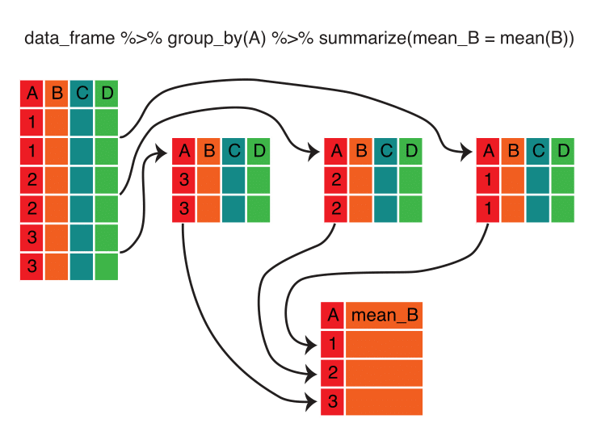
Note that, unlike with the mutate() function, the summarize() function returns a data frame with fewer rows than the original, because of aggregation.
Here’s the code that implements the calculation:
# Group baby_names by Year and calculate the sum of Count
# Call the resulting column "Total"
# Assign the result to an object called "bn_by_year" and remember to ungroup!
bn_by_year <-
baby_names %>%
group_by(Year) %>%
summarize(Total = sum(Count)) %>%
ungroup()
head(bn_by_year)# A tibble: 6 × 2
Year Total
<dbl> <dbl>
1 1960 4154377
2 1961 4140244
3 1962 4035234
4 1963 3958791
5 1964 3887800
6 1965 3626029Exercise 5
Popularity of the most popular names
In this exercise we will plot trends in the proportion of boys and girls given one of the 10 most popular names each year.
- Filter the
baby_namesdata, retaining only the 10 most popular girl and boy names for each year.
##- Summarize the data produced in step one to calculate the
Total Proportionof boys and girls given one of the top 10 names each year.
##- Plot the data produced in step 2, with
Yearon the x-axis andTotal Proportionon the y axis. Color bySexand notice the trend.
##
TipExercise 5 solution
- Filter the
baby_namesdata, retaining only the 10 most popular girl and boy names for each year.
most_popular <-
baby_names %>%
group_by(Year, Sex) %>%
filter(Rank <= 10)
head(most_popular, n = 10)# A tibble: 10 × 8
# Groups: Year, Sex [1]
Name Sex Count Year Count_1k Rank Count_levels Proportion
<chr> <chr> <dbl> <dbl> <dbl> <dbl> <chr> <dbl>
1 Mary Girls 51474 1960 51.5 1 high 0.0255
2 Susan Girls 39200 1960 39.2 2 medium 0.0194
3 Linda Girls 37314 1960 37.3 3 medium 0.0185
4 Karen Girls 36376 1960 36.4 4 medium 0.0180
5 Donna Girls 34133 1960 34.1 5 medium 0.0169
6 Lisa Girls 33702 1960 33.7 6 medium 0.0167
7 Patricia Girls 32102 1960 32.1 7 medium 0.0159
8 Debra Girls 26737 1960 26.7 8 medium 0.0132
9 Cynthia Girls 26725 1960 26.7 9 medium 0.0132
10 Deborah Girls 25264 1960 25.3 10 medium 0.0125- Summarize the data produced in step one to calculate the
Total Proportionof boys and girls given one of the top 10 names each year.
top10 <-
most_popular %>% # it is already grouped by Year and Sex
summarize(TotalProportion = sum(Proportion))- Plot the data produced in step 2, with
Yearon the x-axis andTotal Proportionon the y axis. Color bySexand notice the trend.
qplot(x = Year,
y = TotalProportion,
color = Sex,
data = top10,
geom = "line")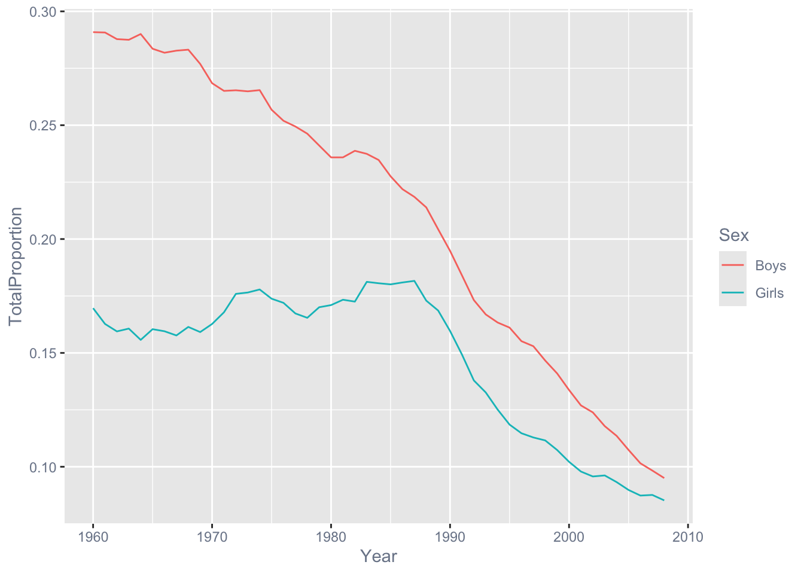
Saving work
GOAL: To learn how to save objects, data, and scripts for later use.
Now that we have made some changes to our data set, we might want to save those changes to a file.
Saving individual datasets
You might find functions write_csv() and write_rds() from package readr handy!
# write baby_names to a .csv file
write_csv(baby_names, "babyNames.csv")# write baby_names to an R file
write_rds(baby_names, "babyNames.rds")Saving multiple datasets
ls() # list objects in our workspace
# Use save() function from the `base` R package to record some objects
# into a file named "myDataFiles.RData"
save(baby_names_diana, bn_by_year, baby_names_subset, file="myDataFiles.RData") # Load the "myDataFiles.RData"
# load("myDataFiles.RData") Wrap-up
Feedback
These workshops are a work-in-progress, please provide any feedback to: help@iq.harvard.edu
Resources
- IQSS
- Training materials: https://iqss.github.io/dss-training/
- Data Science Services: https://www.iq.harvard.edu/data-science-services
- Research Computing Environment: https://iqss.github.io/dss-rce/
- HBS
- Research Computing Services: https://www.hbs.edu/research-computing-services/
- RCS consulting email: mailto:research@hbs.edu
- Software (all free!):
- R and R package download: http://cran.r-project.org
- Positron download: https://positron.posit.co/download
- Positron download: https://positron.posit.co/download
- RStudio download: https://posit.co/download/rstudio-desktop/
- ESS (Emacs R package): http://ess.r-project.org/
- Cheatsheets
- Online tutorials
- Getting help:
- Documentation and tutorials: http://cran.r-project.org/other-docs.html
- Recommended R packages by topic: http://cran.r-project.org/web/views/
- Mailing list: https://stat.ethz.ch/mailman/listinfo/r-help
- StackOverflow: http://stackoverflow.com/questions/tagged/r
- R-Bloggers: https://www.r-bloggers.com/
- Coming from …